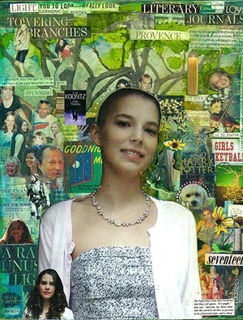

Nicole Kristine Eidsvik
March 29, 1994 ~ November 22, 2011
Nicole was born on March 29, 1994. In August 2008, she was diagnosed with Stage IV alveolar rhabdomyosarcoma. Her journal speaks for her:
September 1, 2008 at home
My problems are not that catastrophic or scary, so my experiences in the last few days are pretty new to me. I have been diagnosed with cancer. Yeah, shocked? So was I... The hard part is telling people. Like what do you say? Yup, I’ve got cancer, what’s up with you?!?! I have no idea how to tell people. I’m learning a lot about people though, which is that most people are kind, caring and amazing. Support has been flowing in from everywhere, and my church has been really great too. But I don’t feel like thinking about it right now, or anything.
January 2, 2010 at BC Children’s Hospital
I don’t know why I am still here, why I survived when other good kids died, but I’m going to make the most of the rest of my life. It’s important to always remember to view my life as a gift, so I don’t start taking things for granted. I got my final scans back by the way, they came back clear. So I guess the only thing left to say is: "Welcome to normalcy."
Cancer returned in August 2010
September 28, 2011 at Quest University
The weather today seems to be celebra-ting with us Quest students at the end of our block. I feel very satisfied with our Cornerstone class, I got a lot out of it. It just feels good finishing something... It bothers me wondering about how much time I have left, whatever it is, I feel it couldn't possibly be enough. Other stu-dents with their plans extending years ahead of them don't know how lucky they are. But the sun is warm and beautiful on my skin and I will get to see [my dog] Gromit tonight; tonight is a night for celebrating.
October 20, 2011 at Quest University
My body's holding up. Sometimes I feel like a scarecrow precariously held together with straw and sticks. How long can we hold Nicole together? I joke, but it scares me.
After 70 weeks of chemo, radiation and surgery in her three year battle with cancer, Nicole died on November 22, 2011. She was seventeen.